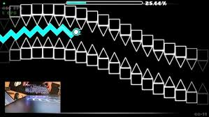

Факт перший
Zoink став першим після nSwish гравцем, який пройшов увесь «Main List» демонів (основний список найважчих рівнів) за версією «Demonlist».
Він також верифікував такі складні рівні як Acheron, Avernus та Tidal Wave — три підряд топ-1 рівні.
Факт другий
Він встановив світовий рекорд — 67% на рівні Unnerfed Exasperation, старому складному рівні. Також 25 травня 2025 року він завершив рівень Thinking Space II після ~80 000 спроб.
Рівень Exasperation
10 маловідомих фактів про гравця Zoink
- Він народився 28 лютого 2008 року і проживає у Канзасі, США. 
- Псевдоніми: раніше грав під ніком “Z01nk” та “zZoink”.
- Створив свій канал на YouTube 1 січня 2018 року.
- Створив свій канал на YouTube 1 січня 2018 року.
- Він перший гравець, який послідовно верифікував три Top-1 рівні: Acheron, Avernus та Tidal Wave.
- Під час проходження Tidal Wave він витратив 49 534 спроби (approx) на верифікацію.
- Після викиду скандалу з гравцем SpaceUK (чия діяльність виявилась шахрайською) Zoink став визнаним лідером спільноти.
- У одному з рівнів, Acheron, він зафіксував понад 61 000 спроб перед верифікацією і зазначив, що в ньому є вісім “120 FPS фрейм-перфектів” (натискань із точністю ~0,0083 сек).
- У Reddit-спільноті його називають «безумовним GOAT (найкращим)» серед гравців Geometry Dash: “I’m going to be real, this dude is the undisputed GOAT of Geometry Dash…”
- Відео зі стрімами та верифікаціями його рекордів іноді перевищують годину, він активно живе-стрімить процес, що додає прозорості.